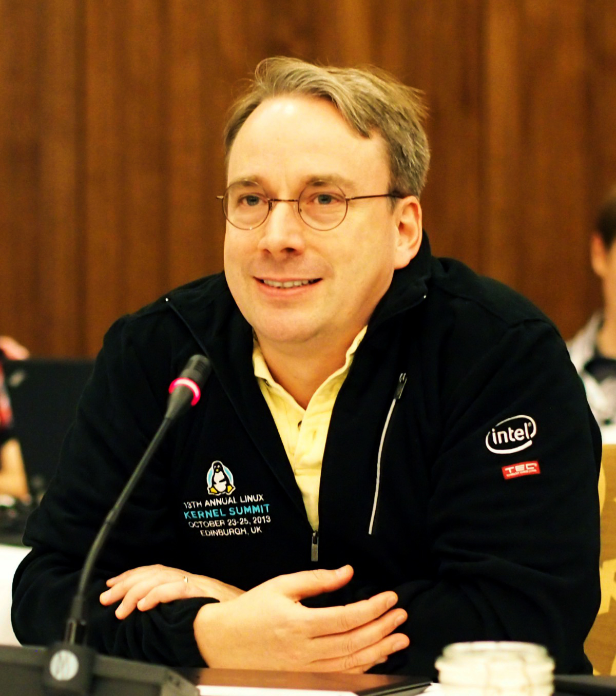

Linus Benedict Torvalds

a Finnish software engineer who is the creator and principal developer of the Linux kernel. In addition, he created the distributed revision control system Git and the Subsurface.